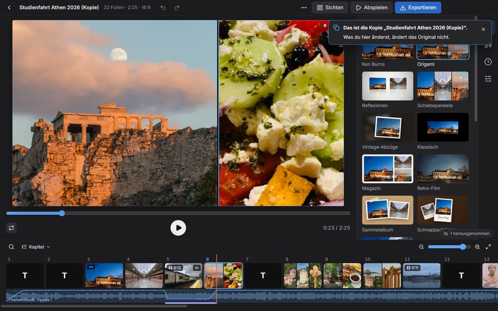
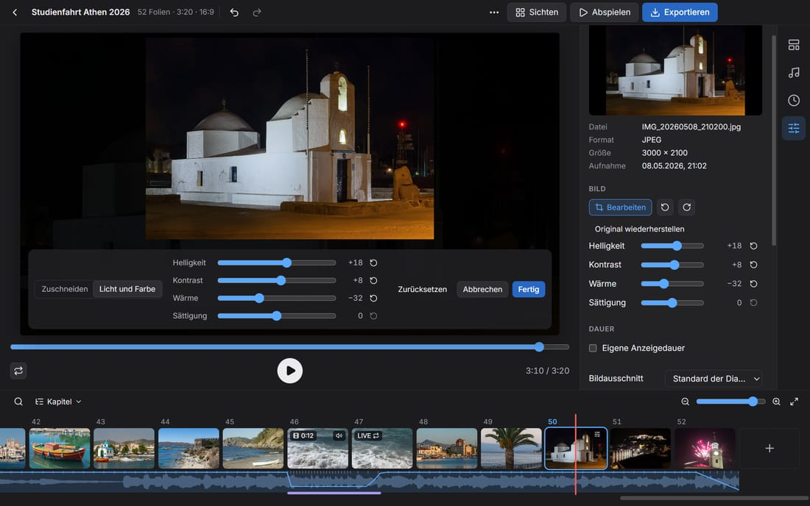
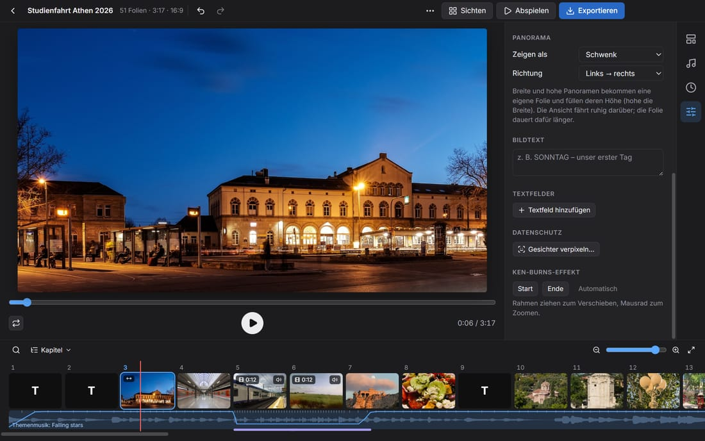
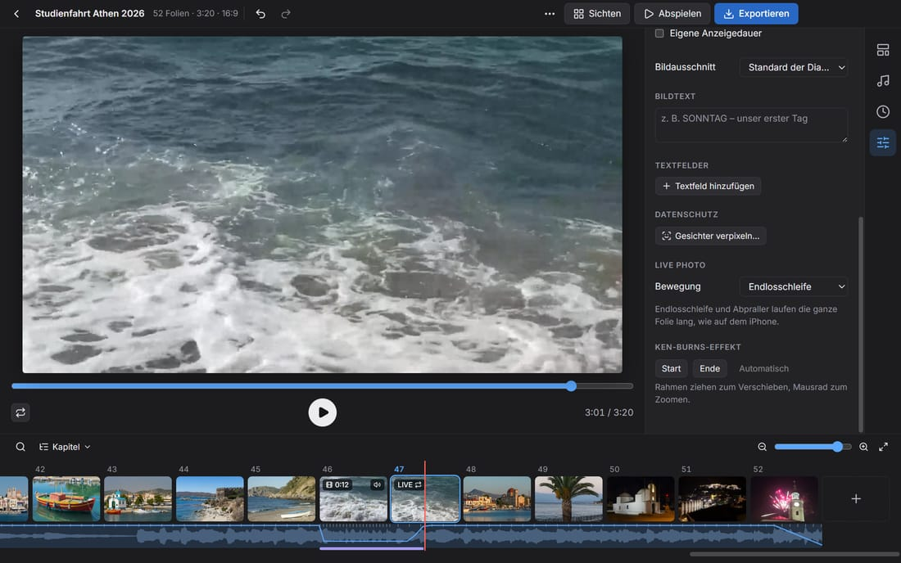
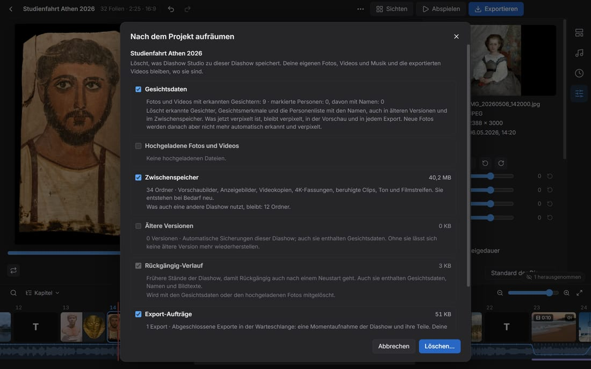
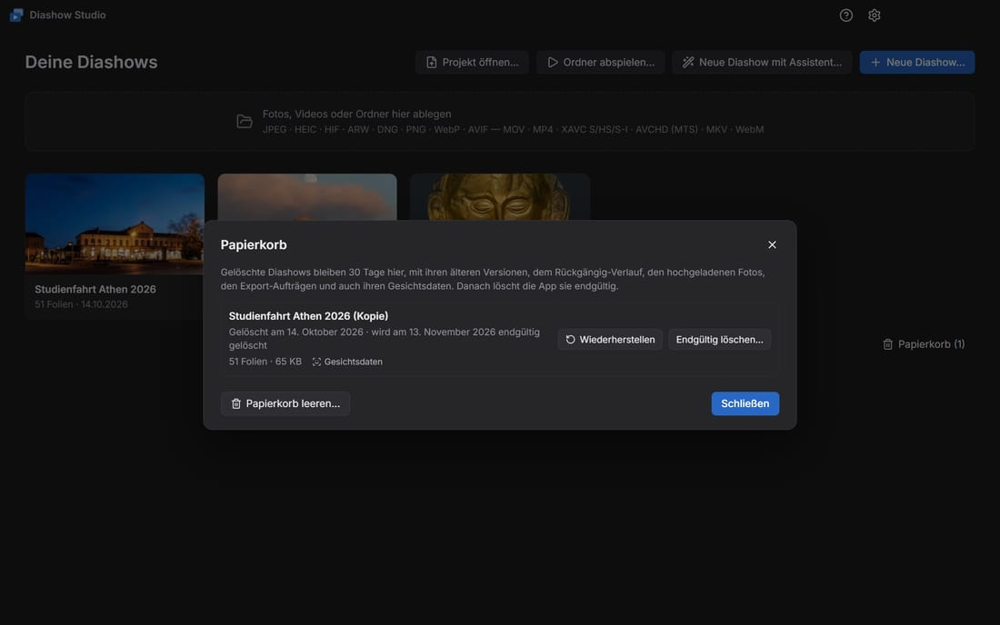
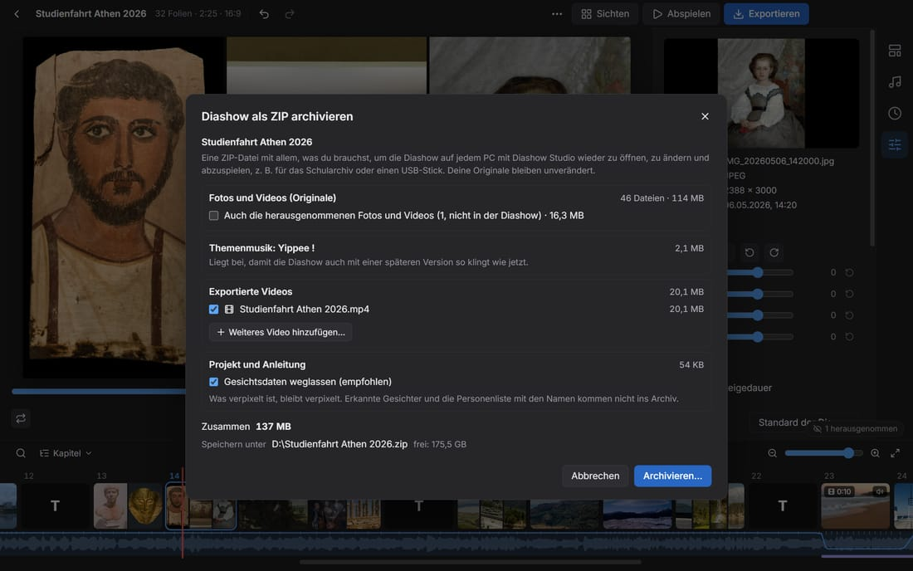

Handbuch
Alles für deine erste Diashow und darüber hinaus. Dasselbe Handbuch steckt in der App: F1 drücken.
Erste Schritte
Diashow Studio macht aus Fotos, Videos und Musik eine Diashow und speichert sie als MP4-Video. Alles läuft auf deinem PC, ohne Internet.
Am schnellsten geht es mit dem Assistenten. Er öffnet sich beim ersten Start, später über Neue Diashow mit Assistent… auf der Startseite.
- Fotos und Videos: einzelne Dateien oder einen ganzen Ordner wählen. Unterordner kommen mit.
- Thema und Musik: ein Thema anklicken. Jedes Thema bringt Musik mit; eigene Songs ersetzen sie.
- Zeigen oder exportieren: die Diashow abspielen oder als Video speichern.

Andere Wege zur neuen Diashow:
- Fotos, Videos oder Ordner ins Fenster ziehen.
- Neue Diashow… wählt Dateien aus. Ordner abspielen… zeigt einen Ordner sofort als Diashow.
- Projekt öffnen… lädt eine
.dshow-Datei, z. B. ein gepacktes Projekt von einem anderen PC.
Diashows werden automatisch gespeichert, in Dokumente\Diashow Studio. Neue Fotos werden im Hintergrund vorbereitet; du kannst sofort weiterarbeiten.
Die Startseite
Jede Diashow hat auf der Startseite eine Karte; ein Klick öffnet sie. Zeigst du auf die Karte, erscheinen ihre Knöpfe: Duplizieren, Als ZIP archivieren…, Nach dem Projekt aufräumen… und Diashow löschen….

- Fotos zu einer Diashow hinzufügen: Fotos, Videos oder Ordner aus dem Explorer auf ihre Karte ziehen; die Karte zeigt Zu dieser Diashow hinzufügen. Beim Loslassen öffnet sich die Diashow, und die Fotos kommen nach Aufnahmezeit in ihren Tag (mit neuem Tagestitel, wenn die Diashow Tagestitel hat). Was schon drin ist, wird übersprungen; Strg+Z nimmt alles in einem Schritt zurück.
- Auf das Feld Fotos, Videos oder Ordner hier ablegen oder woanders auf der Startseite gezogen, entsteht eine neue Diashow.
- Solange ein Dialog offen ist (z. B. die Einstellungen), nimmt das Fenster keine Dateien an. Ein Hinweis sagt dann Erst den Dialog schließen. Nur der Assistent nimmt Fotos auch dann.
- Papierkorb (n) unten auf der Startseite öffnet den Papierkorb.
Duplizieren
Duplizieren (an der Karte oder im Menü ⋯) legt eine unabhängige Kopie an, z. B. eine Fassung für den Elternabend mit mehr verpixelten Gesichtern neben der Fassung für die Klasse. Die Kopie heißt „Klassenfahrt (Kopie)“, „Klassenfahrt (Kopie 2)“ usw. und öffnet sich gleich im Editor. Was du dort änderst, ändert das Original nicht.

- Die Kopie enthält alles, was die Diashow hat: Folien, Einstellungen, Musik, Bearbeitungen, Bildtexte, Verpixelungen, die Personenliste mit den Gesichtsdaten und die Löschfrist. Der Titel im Video bleibt „Klassenfahrt“.
- Ältere Versionen, Rückgängig-Verlauf und Export-Aufträge bleiben beim Original.
- Hochgeladene Fotos der Klasse und eingefügte Bilder gehören beiden Diashows. Aufräumen und Löschen lassen sie stehen, solange die andere Diashow sie nutzt, auch aus dem Papierkorb heraus.
Bearbeiten
Der Editor hat drei Bereiche: die Vorschau in der Mitte, rechts die Reiter Themen, Musik, Dauer und Folie, unten den Filmstreifen mit allen Folien.

- Reihenfolge: Folien im Filmstreifen ziehen. Eine Folie auf die Mitte einer anderen ziehen fasst beide zu einer Folie zusammen.
- Mehrere Folien: Strg+Klick, Umschalt+Klick oder Strg+A. Der Reiter Folie ändert dann alle zusammen: Dauer, Bildausschnitt, Tempo, Videoton, Bewegung von Live Photos, Verpixeln oder Aus der Diashow nehmen.
- Anzeigedauer: am rechten Rand einer Karte ziehen; ein Doppelklick dort stellt wieder „automatisch“ ein. Für die ausgewählte Folie geht es auch mit Eigene Anzeigedauer im Reiter Folie.
- Bildausschnitt: in der Vorschau ziehen verschiebt das Foto, das Mausrad zoomt, ein Doppelklick setzt zurück.
- Fotos auf einer Folie: In Themen mit mehreren Fotos pro Folie nimmt die Folie mit + und − im Reiter Folie Fotos auf oder gibt sie ab. In einzelne Folien teilen und Zu einer Folie zusammenfassen (im Menü der Folie, Rechtsklick) ändern die Gruppen.
- Texte: Textfolie hinzufügen (Knopf + am Ende des Filmstreifens oder Menü einer Folie) erzeugt eine Textfolie. Textfeld hinzufügen im Reiter Folie setzt Text auf ein Foto; in der Vorschau verschiebst du ihn, ein Doppelklick öffnet ihn zum Schreiben.
- Kapitel: Im Menü ⋯ stehen Tagestitel aus Aufnahmedatum, Kapitel aus Ordnernamen, Nach Aufnahmedatum sortieren und Abspann hinzufügen.
- Rückgängig: Strg+Z, wiederholen mit Strg+Y. Das geht auch nach einem Neustart: Jede Diashow behält ihre letzten 100 Schritte.
Tipp: Leertaste spielt die Vorschau ab, ← und → springen von Folie zu Folie.
Fotos hinzufügen und einfügen
- Hinzufügen: Fotos, Videos oder Ordner ins Fenster ziehen, oder der Knopf + am Ende des Filmstreifens mit Fotos und Videos hinzufügen… und Ordner hinzufügen…. Sie kommen hinter die ausgewählte Folie, ohne Auswahl ans Ende.
- An einer Stelle einfügen: Aus dem Explorer zwischen zwei Karten des Filmstreifens ziehen; eine blaue Linie zeigt, wo sie landen. Auf die Mitte einer Karte gezogen, kommen sie mit auf diese Folie, wenn das Thema mehrere Fotos pro Folie zeigt und Platz ist.
- Kopieren und einfügen: Im Explorer kopierte Dateien (Strg+C) fügt Strg+V hinter der ausgewählten Folie ein. Ein kopiertes Bild ohne Datei, etwa ein Bildschirmfoto mit Win+Umschalt+S, speichert die App in
Dokumente\Diashow Studio\Eingefügt. - Einfügen… im Menü einer Folie wählt Dateien aus und setzt sie hinter diese Folie.
Live Photos und RAW+JPEG kommen als ein Foto hinein. Die neuen Folien sind danach ausgewählt; Strg+Z nimmt das ganze Einfügen in einem Schritt zurück. In Themen mit mehreren Fotos pro Folie bleiben die anderen Folien, wie sie sind (siehe Automatisch gruppieren unter Themen).
Was schon in der Diashow ist
Fotos und Videos, die schon in der Diashow sind, kommen nicht noch einmal hinein, egal auf welchem Weg, auch mit dem Assistenten oder beim Hochladen über das WLAN. Als „schon da“ zählt:
- dieselbe Datei, auch wenn ihre Folie herausgenommen ist;
- eine Kopie unter anderem Namen, die Byte für Byte gleich ist;
- dasselbe Foto als HEIC und als JPEG vom selben Handy. Serienbilder kommen alle hinein.
Ein Hinweis unten rechts sagt, wie viele übersprungen wurden. Zeigen wählt die vorhandenen Folien aus, Trotzdem hinzufügen fügt sie doch hinzu. Verkleinerte Kopien, etwa aus WhatsApp, findet Ausschuss prüfen… (siehe Sichten).
Filmstreifen: Zoom, Suche und Kapitel
- Zoom: − und + oder der Regler über dem Filmstreifen machen die Folien kleiner oder größer, ebenso Strg+Mausrad über dem Filmstreifen. Ganze Diashow zeigen passt alle Folien in die Breite. Kleine Karten zeigen nur noch Bilder; eine dünne blaue Linie markiert jedes Kapitel.
- Suche: Strg+F oder die Lupe. Gesucht wird in Dateinamen, Kapiteln, Bildtexten, Textfolien, Textfeldern, Namen aus der Personenliste und im Aufnahmedatum („12.5.“, „12. Mai“, „Dienstag“, „Mai 2025“). „Video“ und „Live“ finden Videos und Live Photos. Bei mehreren Wörtern muss jedes passen.
- Die Treffer stehen in einer Liste und sind im Filmstreifen gelb markiert. Enter / Umschalt+Enter oder F3 / Umschalt+F3 gehen zum nächsten / vorigen Treffer, Esc schließt die Suche.
- Kapitel: Das Menü Kapitel listet Titel, Kapitel und Textfolien mit ihrer Zeit; ein Klick springt hin.
Zeichen auf den Karten: ein Doppelpfeil für Panoramen, LIVE für Live Photos (mit dem Zeichen von Endlosschleife oder Abpraller), ein Regler-Zeichen für bearbeitete Fotos.
Fotos bearbeiten
Schiefe oder liegende Handyfotos richtest du wie in Fotos auf dem Mac: Foto auswählen und im Reiter Folie auf Bearbeiten klicken (oder Bearbeiten im Menü der Folie). Videos bearbeitest du genauso.
- Drehen: Die Pfeile drehen um 90°. Strg+R dreht alle ausgewählten Fotos nach links.
- Begradigen: Der Regler neigt das Bild um bis zu 45°, ohne leere Ecken.
- Zuschneiden: Ecken und Kanten des Rahmens ziehen. Format hält ein Seitenverhältnis fest (Frei, Original, 1:1, 4:3, 3:2, 16:9, 9:16).
- Licht und Farbe: Helligkeit, Kontrast, Wärme und Sättigung, jeweils von −100 bis +100. Gegen orangefarbenes Kunstlicht ziehst du Wärme nach links. Ein Doppelklick setzt einen Regler auf 0.
- Zurücksetzen nimmt alles zurück, Abbrechen (Esc) verwirft die Änderungen, Fertig (Enter) übernimmt sie.

Das bearbeitete Foto erscheint überall: in jeder Folie, im Filmstreifen, beim Sichten und im Export. Verpixelte Gesichter bleiben verpixelt. Die Regler für Licht und Farbe stehen auch im Reiter Folie; dort gelten sie für alle ausgewählten Fotos.
Themen und Looks
Das Thema bestimmt, wie die Folien aussehen und wechseln. Es gibt 11 Themen, z. B. Ken Burns (langsame Fahrten über das Foto), Magazin (mehrere Fotos im Raster) oder Schnappschüsse (Sofortbilder auf einem Tisch).
- Themen mit mehreren Fotos pro Folie ordnen die Fotos selbst an. Im Reiter Folie wählst du ein anderes Layout oder Frei für eine eigene Collage: Fotos ziehen, an der Ecke die Größe ändern, mit dem Knopf oben drehen.
- Automatisch gruppieren: Folien, die du zusammengefasst oder geteilt hast, behalten ihre Fotos, auch nach einem Themenwechsel. Über dem Filmstreifen steht dann z. B. 3 feste Folien · Automatisch gruppieren; ein Klick verteilt alle Fotos wieder nach dem Muster des Themas. Für einzelne Folien steht Automatisch gruppieren im Menü der Folie.
- Der Look (Natürlich, Lebendig, Warm, Kühl, Dramatisch, Verblasst, Schwarzweiß, Noir) färbt nur die Fotos und Videos, nicht den Hintergrund.
- Fotos bildfüllend zuschneiden (Reiter Dauer) gilt für die ganze Diashow; jedes Foto kann im Reiter Folie mit Ganzes Bild eine Ausnahme sein.
- Titel: Titeltext, Schrift, Größe, Farbe und Titelanimation (Handschrift, Schreibmaschine, großes Wort mit Linie) stellst du im Reiter Themen ein. Jede Textfolie kann im Reiter Folie eine eigene Animation haben, auch einen rollenden Abspann.
- Ken Burns: Start- und Endausschnitt eines Fotos legst du im Reiter Folie unter Ken-Burns-Effekt fest.
- Im Thema Klassisch wählst du den Übergang (Überblenden, Schieben, Würfel …) im Reiter Dauer.
Panoramen
Sehr breite Fotos, z. B. Panoramen vom Handy, zeigt die Diashow wie Fotos auf dem Mac: Sie bekommen eine eigene Folie, füllen deren Höhe, und die Ansicht fährt ruhig von einem Ende zum anderen. Sehr hohe Fotos fahren von oben nach unten.

- Als Panorama gilt ein Foto ab doppelt so breit wie hoch, das deutlich breiter als die Diashow ist (bei 16:9 ab etwa 2,5:1). Im Filmstreifen trägt seine Folie einen Doppelpfeil.
- Seine Folie dauert länger, je breiter es ist, höchstens zweieinhalbmal so lange wie ein Foto. Eine eigene Anzeigedauer gilt trotzdem.
- Im Reiter Folie wählst du unter Panorama, ob es als Schwenk, Ganzes Bild oder Bildfüllend erscheint, und die Richtung, auch für mehrere Panoramen zugleich.
- Verpixelte Gesichter bleiben beim Schwenken verpixelt.
Videos und Live Photos
Videos stellst du im Reiter Folie ein:
- Kürzen: die Griffe über dem Streifen mit Bildern aus dem Clip ziehen, Gekürzt abspielen spielt das Ergebnis. Videos höchstens (Reiter Dauer) kürzt lange Clips automatisch.
- Tempo: Zeitlupe und Zeitraffer von 0,25× bis 8×. Zwischen 0,5× und 2× spielt der Ton mit, sonst bleibt der Clip stumm.
- Verwacklung beruhigen macht wacklige Handyvideos ruhiger. Das Bild wird dafür leicht vergrößert.
- Videoton: Lautstärke, Stumm und Musik absenken. Während ein Video mit Ton läuft, wird die Musik automatisch leiser (Reiter Musik).
Live Photos (iPhone) und Bewegte Fotos (Android) können sich bewegen. Unter Live Photo wählst du bei Bewegung, wie, auch für mehrere Fotos zugleich:
- Aus (Standbild) oder Live (einmal) am Anfang der Folie;
- Endlosschleife: Die Bewegung wiederholt sich die ganze Folie lang, das Ende blendet weich in den Anfang über;
- Abpraller: Die Bewegung läuft vorwärts und rückwärts.

Endlosschleife und Abpraller laufen mindestens einmal ganz durch; das Foto steht dann allein auf seiner Folie, verpixelte Gesichter bleiben verpixelt. Standard folgt Live Photos / Bewegte Fotos abspielen im Reiter Dauer. Im Filmstreifen steht das Zeichen von Endlosschleife oder Abpraller neben LIVE.
Musik
Jedes Thema hat eigene Musik (CC0 oder gemeinfrei, frei nutzbar, auch in geteilten Videos). Im Reiter Musik fügst du mit Musik hinzufügen… eigene Songs hinzu (MP3, M4A, WAV, FLAC und mehr); sie ersetzen die Themenmusik. Mehrere Songs bilden eine Wiedergabeliste, die du per Ziehen ordnest.

- Themenmusik: Hier wählst du einen anderen Song des Themas, eines anderen Themas oder aus der Musikbibliothek, gefiltert nach Stimmung (z. B. Feierlich für eine Zeugnisausgabe oder Weihnachtlich). Zur eigenen Musik hinzufügen übernimmt ihn in die Wiedergabeliste.
- An Musik anpassen (Reiter Dauer): Die Diashow dauert genau so lange wie die Musik. Oder du legst eine Eigene Dauer fest.
- Folienwechsel im Takt der Musik legt jeden Wechsel auf einen Schlag.
- Die Schere neben einem Song wählt Anfang und Ende, z. B. um ein langes Intro zu überspringen.
- Musik ab hier: Ein Song kann ab einer Kapitelfolie spielen, etwa eigene Musik für jeden Tag einer Klassenfahrt.
- Lautstärke angleichen bringt Songs und Videoton auf denselben Pegel.
Sichten
Sichten (oben rechts) zeigt alle Fotos und Videos als Raster. So gehst du einen großen Import schnell mit der Tastatur durch.

- X nimmt ein Bild aus der Diashow (es bleibt im Projekt) und holt es zurück.
- 1 bis 5 vergibt Sterne, Leertaste zeigt das Bild groß.
- Filter zeigen z. B. nur Herausgenommen, nur Bilder mit Sternen oder Unscharf & Doppelte.
- Nur ab 3 ★ in die Diashow (oder eine andere Zahl) behält nur die besten.
- Ausschuss prüfen… im Menü ⋯ findet unscharfe Fotos und Doppelte, auch dasselbe Video zweimal (z. B. aus WhatsApp).
Datenschutz: Gesichter verpixeln
Für Schülerinnen und Schüler ohne Fotoerlaubnis verpixelst du Gesichter. Die Gesichtserkennung läuft offline auf deinem PC; kein Bild verlässt ihn.

- Folie auswählen, im Reiter Folie auf Gesichter verpixeln… klicken.
- Ein erkanntes Gesicht anklicken oder mit der Maus einen Bereich aufziehen.
- Mit dem Personen-Knopf an einem Gesicht (Diese Person überall verpixeln) wird die Person in allen Fotos und Videos der Diashow gesucht und verpixelt. Die Personenliste zeigt die Treffer; einen falschen Treffer entfernst du mit ✕.
- In Videos wird ein angeklicktes Gesicht durch den ganzen Clip verfolgt; ein Regler wählt das Bild aus dem Clip.
- Vor dem Export zeigt Gesichter prüfen… (Menü ⋯ oder Export-Dialog) alle Folien mit Gesichtern, die noch nicht verpixelt sind.
- Die Gesichtsdaten bleiben bei der Diashow, bis du aufräumst.
Prüfe das Ergebnis immer selbst: Die Erkennung findet nicht jedes Gesicht, z. B. im Profil oder sehr klein.
Exportieren
Exportieren (oben rechts) speichert die Diashow als MP4-Video. Wähle eine Vorlage wie YouTube 1080p, WhatsApp / E-Mail (klein) oder Fernseher / Beamer 1080p oder stelle Auflösung, Bildrate und Qualität selbst ein.

- Exporte laufen im Hintergrund nacheinander; du kannst weiterarbeiten. Die Titelleiste zeigt den Fortschritt, die Liste Exporte alle Aufträge.
- Jeder Export ist eine Momentaufnahme: Spätere Änderungen verändern ihn nicht.
- Nach einem Absturz oder Neustart geht es mit Fortsetzen in der Liste Exporte weiter.
- Kapitel als Sprungmarken: Ab zwei Kapiteln springen Player wie VLC damit direkt zu „Dienstag“. Kapitel kopieren legt die Liste für eine YouTube-Beschreibung in die Zwischenablage.
- Mit Grafikkarte zum Kodieren nutzen (NVIDIA, Intel, AMD) geht der Export deutlich schneller. Der PC geht währenddessen nicht in den Ruhezustand.

Im WLAN teilen
Über ⋯ → Im WLAN teilen… tauschst du Fotos und Videos mit Handys aus, nur im lokalen Netz, ohne Internet und ohne App.

- Fotos einsammeln: Nach Starten zeigt der Laptop einen QR-Code. Die Schülerinnen und Schüler öffnen damit eine Seite und laden Fotos und Videos hoch. Sie landen in
Dokumente\Diashow Studio\Uploadsund gleich in der Diashow, nach Aufnahmezeit in ihrem Tag oder hinter der ausgewählten Folie. Was schon da ist, kommt nicht doppelt hinein. - Video verteilen: Ein fertiger Export lässt sich auf den Handys ansehen und speichern. Für Handys gibt es eine kleine 720p-Version.
- Der Server läuft nur, solange der Dialog offen ist, und antwortet nur auf Links mit einem Zufallsschlüssel.
Beim ersten Mal fragt Windows, ob die App ins Netzwerk darf: Zulassen wählen. In Gäste-WLANs, die Geräte voneinander trennen, hilft der mobile Hotspot von Windows. Zeigt der Dialog eine öffentliche Adresse (z. B. im Uni-WLAN), gib den Link nur an die Klasse und beende den Server danach.
Nach dem Projekt aufräumen
Ist die Diashow fertig, löschst du an einer Stelle, was die App zu ihr gespeichert hat: ⋯ → Nach dem Projekt aufräumen…, der Radiergummi an ihrer Karte auf der Startseite oder Einstellungen → Datenschutz. Der Dialog zeigt jeden Teil mit seiner Größe:
- Gesichtsdaten: erkannte Gesichter und die Personenliste mit den Namen, auch in älteren Versionen. Was verpixelt ist, bleibt verpixelt. Neue Fotos werden danach aber nicht mehr automatisch erkannt.
- Hochgeladene Fotos und Videos der Klasse und mit Strg+V eingefügte Bilder: alle oder nur die, die nicht in der Diashow sind. Folien mit gelöschten Fotos verschwinden aus der Diashow; exportiere vorher.
- Zwischenspeicher (Vorschaubilder, Videokopien, Ton): entsteht bei Bedarf neu.
- Ältere Versionen, Rückgängig-Verlauf und Export-Aufträge. Der Rückgängig-Verlauf geht immer mit, wenn Gesichtsdaten oder hochgeladene Fotos gelöscht werden.

Deine eigenen Fotos, Videos und Musik und die exportierten Videos bleiben unberührt. Was das Aufräumen löscht, ist sofort endgültig gelöscht, ohne Papierkorb.
Löschfrist: Im selben Dialog (oder nach dem Export) legst du fest, wann aufgeräumt werden soll: in 1, 3, 6 oder 12 Monaten oder an einem Datum. Ist der Tag da, zeigt die Startseite einen Hinweis an der Diashow und Löschfrist erreicht: aufräumen?; In einem Monat erinnern verschiebt sie.
Ein ZIP-Archiv ist eine Kopie, die das Aufräumen nicht erreicht; lösche es selbst.
Papierkorb
Diashow löschen… (an ihrer Karte auf der Startseite) zeigt, was mit in den Papierkorb kommt: ältere Versionen, Rückgängig-Verlauf, hochgeladene Fotos und fertige Export-Aufträge. Der Zwischenspeicher wird gleich gelöscht; er entsteht neu, wenn du die Diashow wiederherstellst und öffnest. Solange ein Export der Diashow noch wartet oder läuft, lässt sie sich nicht löschen.

- Papierkorb (n) unten auf der Startseite zeigt die gelöschten Diashows: wann sie gelöscht wurden, wann sie endgültig verschwinden und wie groß sie sind.
- Wiederherstellen holt eine Diashow zurück, wie sie war, auch nach einem Neustart. Eine andere Diashow wird dabei nie überschrieben.
- Endgültig löschen… und Papierkorb leeren… löschen nach einer Rückfrage sofort. Nach 30 Tagen löscht die App eine Diashow im Papierkorb von selbst endgültig.
- Die Löschfrist gilt auch im Papierkorb. Ist sie erreicht, bietet die Startseite Endgültig löschen… an.
Auch im Papierkorb enthält eine Diashow noch ihre Gesichtsdaten und die Fotos der Klasse. Einstellungen → Datenschutz zeigt, wie viel im Papierkorb liegt, und leert ihn.
Vorführen
- Abspielen zeigt die Diashow im Vollbild (Esc beendet).
- Präsentieren (Menü ⋯) zeigt die Diashow auf dem Beamer und auf dem Laptop die aktuelle und die nächste Folie mit Zeit und Steuerung.
- Der Endlos-/Kioskmodus (Einstellungen) startet die App direkt mit einer Diashow in Endlosschleife, z. B. für den Tag der offenen Tür.
Projekte sichern und mitnehmen
- Ältere Version wiederherstellen… (Menü ⋯): Vor dem Speichern wird die vorige Version aufgehoben (die letzten 20).
- Projekt packen… kopiert die Diashow mit allen Fotos, Videos und Musik in einen Ordner, z. B. für einen USB-Stick. Am anderen PC öffnest du die
.dshow-Datei. - Wurden Originale verschoben (anderer Ordner, neuer Laufwerksbuchstabe), findet Ordner durchsuchen… im gelben Hinweis sie wieder.
Diashow als ZIP archivieren
⋯ → Als ZIP archivieren… (oder das Archiv-Symbol an der Karte) legt alles in eine ZIP-Datei, z. B. für das Schularchiv: das Projekt, die Original-Fotos und -Videos, die Musik, auf Wunsch die fertigen Exporte und eine kurze Anleitung (LIESMICH.txt).

- Der Dialog zeigt jeden Teil mit seiner Größe, die Summe und den freien Platz. Herausgenommene Fotos kommen nur mit, wenn du es ankreuzt; Gesichtsdaten weglassen ist voreingestellt, verpixelt bleibt verpixelt.
- Öffnen: das ZIP entpacken (Rechtsklick → Alle extrahieren…) und die
.dshow-Datei doppelklicken.
Das Archiv enthält Fotos der Schülerinnen und Schüler und ist eine Kopie, die das Aufräumen nicht erreicht: Bewahre es sicher auf und lösche es selbst bis zur Löschfrist.
Beschädigte Projekte reparieren
Wurde eine Projektdatei beim Speichern unterbrochen (z. B. durch einen Stromausfall), steht sie auf der Startseite mit Reparieren…: Aus der Datei retten übernimmt, was noch lesbar ist, Automatische Sicherungen öffnet eine ältere, vollständige Version. Die beschädigte Datei bleibt erhalten. Kleinere Schäden behebt die App beim Öffnen selbst und sagt, was sich geändert hat.
Einstellungen und Systemcheck
Die Einstellungen öffnest du mit dem Zahnrad oben rechts (oder im Menü ⋯).

- Erscheinungsbild: System, Hell oder Dunkel. System folgt dem App-Modus von Windows. Vorschau und Vollbild bleiben immer dunkel.
- Vorschauqualität: Hoch, Mittel oder Niedrig für langsamere Laptops. Exporte sind davon nicht betroffen.
- Grafikchip (nur auf Laptops mit zwei Grafikchips): Leistung macht 4K-Exporte etwa ein Drittel schneller, Stromsparend schont den Akku. Gilt ab dem nächsten Start.
- Speicher: zeigt, wie viel Platz Vorschaubilder, Videokopien und 4K-Fassungen belegen, und löscht sie bei Bedarf.
- Datenschutz: Aufräumen, Rückgängig-Verlauf und Papierkorb.
- Updates: Auf Wunsch fragt die App einmal am Tag bei GitHub nach einer neuen Version und zeigt dann einen Hinweis. Installiert wird nichts automatisch.
- Fehlersuche: Der Systemcheck prüft einen fremden PC (z. B. im Computerraum): Grafikkarte, Hardware-Encoder, Speicher und einen kurzen Export-Test. Bericht kopieren kopiert alles als Text.
Diagnosepaket
Klappt etwas nicht, hilft ein Diagnosepaket der Person, die dir hilft: Einstellungen → Fehlersuche → Diagnosepaket erstellen…. Vor dem Speichern siehst du jede Datei des Pakets. Enthalten sind Fehlerprotokoll, Systemcheck, Einstellungen, Versionen und vom geöffneten Projekt nur Anzahlen, Formate und Größen, keine Fotos, Videos, Namen oder Gesichtsdaten.
Tastenkürzel
| Leertaste | Vorschau abspielen / anhalten |
| ← / → | Vorige / nächste Folie |
| Strg+Z / Strg+Y | Rückgängig / Wiederholen |
| Entf | Ausgewählte Folien löschen |
| Strg+Klick, Umschalt+Klick | Mehrere Folien auswählen |
| Strg+A | Alle Folien auswählen |
| Strg+R | Ausgewählte Fotos nach links drehen |
| Strg+F | Folien suchen (Name, Kapitel, Datum, Person) |
| F3 / Umschalt+F3 | Nächster / voriger Treffer der Suche |
| Strg+V | Kopierte Fotos, Videos oder ein Bildschirmfoto hinter der ausgewählten Folie einfügen |
| Strg+Mausrad | Filmstreifen vergrößern / verkleinern |
| Alt+Enter | Vollbild abspielen |
| Esc | Vollbild, Präsentation oder Dialog beenden |
| F1 | Dieses Handbuch |
| Alt+← / Alt+→ | Folie im Filmstreifen verschieben |
| Umschalt+F10 | Menü der Folie öffnen |
Alle Tastenkürzel und Maus-Tipps (in der App: Einstellungen → Tastenkürzel)
Tastatur und Touchscreen
Alles in Diashow Studio geht auch ohne Maus:
- Tab und Umschalt+Tab springen von Bedienelement zu Bedienelement; das aktive ist blau umrandet. Leertaste oder Enter drücken einen Knopf.
- In der rechten Leiste wechseln ↑ und ↓ zwischen den Reitern.
- Der Filmstreifen ist ein einziger Halt für Tab: Dort wählen ← und → eine Folie aus (Umschalt wählt einen Bereich), Alt+← / Alt+→ verschieben sie, Umschalt+F10 öffnet ihr Menü.
- Menüs bedienst du mit den Pfeiltasten und Enter. Esc schließt Menüs und Dialoge; danach steht der Fokus wieder dort, wo du vorher warst.
- Die Griffe zum Kürzen von Videos und Songs bewegen sich mit ← und →, mit Umschalt in größeren Schritten. Songs in der Liste verschieben ↑ und ↓ auf ihrer Nummer.
- Solange du in ein Textfeld schreibst, reagieren die Tastenkürzel nicht.
Touchscreen: Textfelder, Fotos in der freien Collage, Bildausschnitte, den Rahmen beim Zuschneiden, die Griffe zum Kürzen und die Anzeigedauer am Rand einer Karte ziehst du auch mit dem Finger.
Ist in Windows „Animationseffekte“ ausgeschaltet, verzichtet auch die App auf Bewegungen in der Oberfläche. Die Diashow selbst läuft unverändert.
Wenn etwas nicht klappt
- Windows warnt beim Installieren („Der Computer wurde durch Windows geschützt“): Weitere Informationen und Trotzdem ausführen wählen. Die App ist nicht kostenpflichtig signiert.
- Die Vorschau ruckelt: in den Einstellungen die Vorschauqualität senken. Der Export wird dadurch nicht schlechter.
- Ein Video bleibt „in Vorbereitung“: Manche Handyvideos (HEVC, HDR) werden erst umgewandelt. Das dauert, ist aber einmalig.
- Der Export ist sehr langsam: im Systemcheck nachsehen, ob ein Hardware-Encoder gefunden wird. Ohne ihn hilft eine kleinere Auflösung (720p).
- Dateien fehlen: Originale wurden verschoben. Im gelben Hinweis Ordner durchsuchen… wählen.
- Dateien auf einem Netzlaufwerk bleiben gesperrt: Ein Projekt von einem anderen PC verweist auf Freigaben wie
\\server\fotos. Weil sich Windows dort mit deinem Konto anmeldet, fragt die App oben im Editor erst nach. Wähle Zugriff erlauben nur, wenn du dem Projekt vertraust. - Handys erreichen den Laptop nicht: Laptop und Handys müssen im selben WLAN sein, und die Windows-Firewall muss die App zulassen. Sonst den mobilen Hotspot von Windows nutzen.
- Etwas anderes: unter Einstellungen → Fehlersuche ein Diagnosepaket erstellen und mit einer Beschreibung an die Person schicken, die dir hilft.
- Einen Fehler melden: Problem melden… (unter Einstellungen → Fehlersuche oder in Über Diashow Studio) öffnet ein Formular auf GitHub, in dem App-Version, Windows-Version und Grafikkarte schon eingetragen sind. Dafür brauchst du ein kostenloses GitHub-Konto. Der Bericht ist öffentlich: Häng höchstens das Diagnosepaket an, keine Fotos von Schülerinnen und Schülern.
Über, Lizenzen und Updates
Diashow Studio ist freie Software (MIT-Lizenz) und spricht Deutsch oder Englisch, je nach Sprache von Windows. Es enthält FFmpeg (GPL), Schriften, Modelle zur Gesichtserkennung und weitere Bibliotheken; ihre Lizenzen und den Quellcode von FFmpeg findest du unter Über Diashow Studio. Dort kannst du auch Nach Updates suchen.